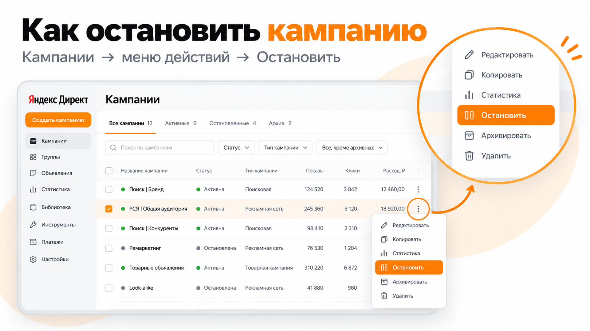
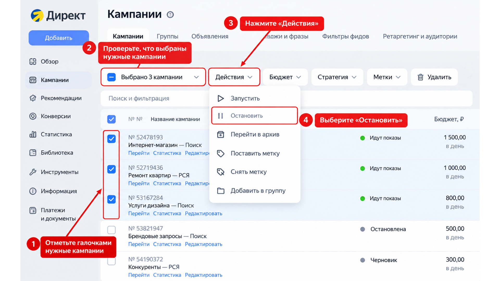
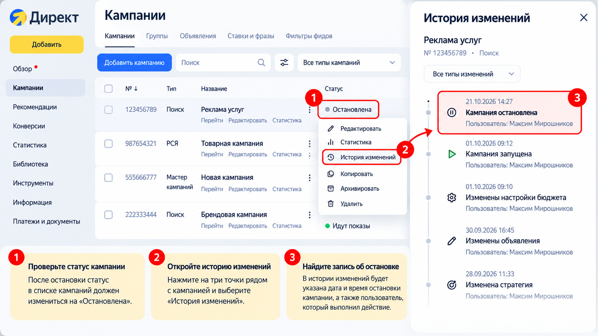
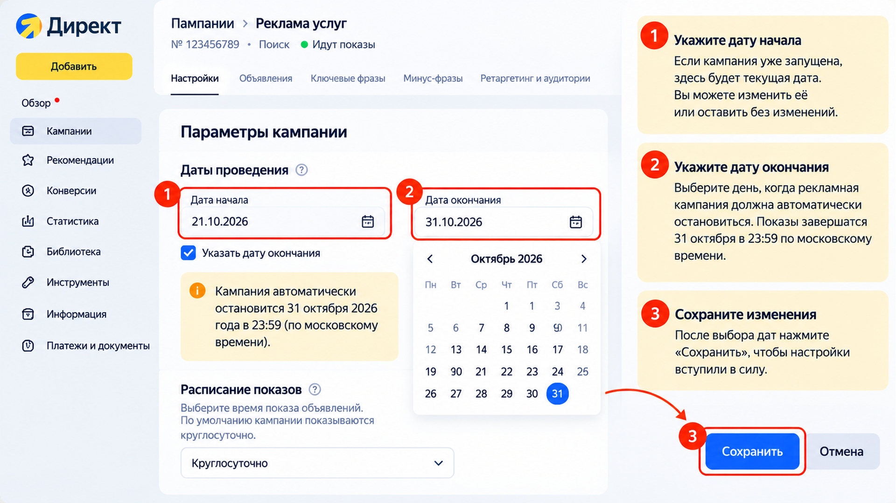

Блог о платном трафике
Как остановить кампанию в Яндекс Директе
Чтобы остановить рекламную кампанию в Яндекс Директе, откройте раздел «Кампании», найдите нужную кампанию, нажмите на три точки рядом с её названием и выберите «Остановить». Настройки, объявления и статистика сохранятся. После обработки команды показы прекратятся, а кампанию можно будет запустить повторно.
Остановка пригодится, если закончился товар, перестал работать сайт, менеджеры не успевают обрабатывать заявки или реклама временно не приносит нужного результата.
Как остановить рекламную кампанию: пошаговая инструкция
В интерфейсе Яндекс Директа:
- Откройте Яндекс Директ (https://direct.yandex.ru/).
- В левом меню перейдите в раздел «Кампании».
- Найдите кампанию по названию или номеру.
- Нажмите на три точки рядом с её названием.
- Выберите «Остановить».
Если кампания уже открыта, аналогичное действие доступно через меню в правом верхнем углу её страницы.
Важно: остановка кампании не удаляет настройки, группы объявлений, аудитории и накопленную статистику. Создавать новую кампанию после паузы не потребуется.

Как остановить сразу несколько кампаний
Если необходимо отключить несколько кампаний одновременно, используйте массовые действия:
- Откройте общий список кампаний.
- Отметьте галочками нужные кампании.
- Нажмите «Действие» или «Действия» в меню управления.
- Выберите «Остановить».
Это удобно, когда нужно отключить рекламу нескольких услуг, временно приостановить весь рекламный аккаунт или остановить показы из-за технических проблем с сайтом.
Обратите внимание: остановка одной кампании не влияет на остальные. Если нужно полностью прекратить рекламные расходы, проверьте все активные кампании в аккаунте, включая Мастер кампаний и Единую перфоманс-кампанию.

Через сколько времени остановятся показы
Остановка рекламной кампании в Яндекс Директе не всегда происходит мгновенно.
По официальной документации Яндекса:
- Обычно изменение статуса занимает до 40 минут.
- При высокой нагрузке обработка может продолжаться до 3 часов.
- Данные о кликах и расходах могут обновляться уже после остановки.
Поэтому увеличение расходов в статистике после нажатия кнопки не обязательно означает, что кампания продолжает работать. Часть данных могла поступить с задержкой.
Если бюджет большой, не ограничивайтесь нажатием кнопки. Убедитесь, что команда выполнена и кампания действительно остановлена.
Как проверить, что кампания остановлена
Проверить остановку можно двумя способами.
Способ 1. Проверить статус кампании.
Откройте список кампаний и найдите нужную. После обработки команды её статус должен измениться на «Остановлена».
Способ 2. Посмотреть историю изменений.
- Найдите кампанию в общем списке.
- Откройте меню действий.
- Выберите «История изменений».
- Найдите запись об остановке кампании.
История изменений позволяет проверить, какие действия выполнялись с рекламой. Там фиксируются запуск и остановка кампаний, изменение стратегий, бюджета и других настроек.
Это особенно полезно, когда рекламой управляют несколько специалистов или изменения вносятся через API.

Что будет с деньгами после остановки кампании
После остановки кампании неизрасходованные деньги не пропадают. Если используется общий счёт Яндекс Директа, остаток остаётся на нём и может использоваться для других рекламных кампаний.
Однако важно учитывать три обстоятельства:
- Остановка сама по себе не означает возврат денег на банковский счёт.
- Другие работающие кампании могут продолжить расходовать общий бюджет.
- В статистике ещё могут появляться расходы за действия, совершённые до завершения остановки.
Если больше не планируете запускать рекламу, потребуется отдельно оформить возврат неизрасходованных средств.
Подробнее: как вернуть деньги с Яндекс Директа.
Как автоматически остановить рекламу в нужный день
Если заранее известно, когда должна закончиться рекламная кампания, необязательно останавливать её вручную.
В параметрах кампании можно установить дату окончания.
Например, если рекламируется акция, действующая до 31 октября, установите эту дату в настройках. Показы завершатся в конце указанного дня согласно настройкам проведения кампании.
Если необходимо временно приостановить кампанию и автоматически возобновить показы, изучите доступные настройки дат начала и проведения для выбранного типа кампании. Настройка повторного запуска зависит от её типа и режима управления.
Если реклама должна работать только в определённые дни недели или часы, используйте временной таргетинг.

Почему нет кнопки «Остановить» в Яндекс Директе
Причин может быть несколько.
- Кампания уже остановлена.
Проверьте её текущий статус. Если она неактивна, повторно останавливать её не требуется.
- Используется «Простой старт».
Для кампаний, созданных через «Простой старт», действуют специальные ограничения. Согласно справке этого продукта, самостоятельно остановить рекламу можно в первые сутки или спустя месяц после запуска. В промежутке кнопка может отсутствовать.
Если требуется отключить показы раньше, обратитесь в поддержку Яндекса.
- Открыт другой раздел интерфейса.
Убедитесь, что находитесь в списке кампаний, а не в настройках отдельного объявления или группы.
Если подходящего действия всё равно нет, проверьте доступные команды на странице самой кампании.
Как снова запустить остановленную кампанию
Остановленную рекламную кампанию можно возобновить без повторного создания.
Откройте список кампаний, найдите нужную и через меню действий выберите «Запустить».
Перед повторным запуском рекомендую проверить:
- Работает ли сайт и открываются ли посадочные страницы.
- Актуальны ли цены, товары и предложения.
- Правильно ли настроены цели Яндекс Метрики.
- Соответствует ли текущим задачам недельный бюджет.
- Не устарели ли объявления и условия показа.
Если кампания долго не работала, автоматической стратегии может потребоваться время на адаптацию к новым условиям.
Я не рекомендую запускать старую кампанию без проверки настроек, особенно если она была остановлена на несколько месяцев.
Чем отличаются остановка, архивация и удаление кампании
В Яндекс Директе эти действия выполняют разные задачи.
| Действие | Что происходит | Когда использовать |
|---|---|---|
| Остановить | Показы прекращаются, настройки сохраняются | Временная пауза |
| Архивировать | Кампания убирается из рабочего списка, но доступна для восстановления | Кампания больше не нужна |
| Удалить | Кампания удаляется | Для черновиков, которые не запускались |
Важный нюанс: если кампания уже находилась в статусе «Идут показы», удалить её обычно нельзя. Вместо удаления используется архивирование.
Также Яндекс может автоматически архивировать остановленные Единые перфоманс-кампании. Поэтому, если кампания пропала из основного списка, проверьте архив.
Для обычной временной паузы выбирайте остановку. Удалять или архивировать рабочую кампанию только ради прекращения расходов не требуется.
Можно ли остановить только одно объявление, а не всю кампанию
Да. В Яндекс Директе можно отключить отдельное объявление или группу объявлений, сохранив работу остальных.
Для этого откройте соответствующую вкладку, выделите нужные объявления или группы и воспользуйтесь меню действий.
Это полезно, если нужно отключить рекламу одного товара, не затрагивая другие предложения.
Остановка отдельного объявления не останавливает всю рекламную кампанию. Остальные объявления могут продолжать показываться и расходовать бюджет.
Частые вопросы
Будут ли списывать деньги после остановки кампании?
В отчётах могут появляться дополнительные расходы за уже совершённые действия. Изменение статуса и обновление статистики происходят с задержкой.
Можно ли поставить Яндекс Директ на паузу на несколько дней?
Да. Остановите кампанию вручную, а затем запустите снова. Возможность автоматического запуска в конкретную дату зависит от типа кампании и её настроек.
Сохраняется ли статистика после остановки?
Да. История показов, кликов, расходов и конверсий остаётся доступной. При этом отдельные показатели, используемые алгоритмами оптимизации, со временем могут терять актуальность.
Нужно ли останавливать кампанию, если закончились деньги?
Необязательно. При недостатке средств показы могут прекратиться автоматически. Однако если вы не хотите случайного возобновления после пополнения счёта, лучше остановить кампанию вручную.
Что лучше: остановить кампанию или поставить нулевой бюджет?
Для временного полного отключения используйте команду «Остановить». Она непосредственно управляет состоянием кампании и не требует менять параметры стратегии.
Что я рекомендую на практике
Если реклама временно не нужна, я останавливаю кампанию, а не удаляю её. Это позволяет сохранить структуру, настройки и накопленную статистику для дальнейшей работы.
В архив отправляю кампании, которые больше не планирую использовать.
При этом самое важное действие происходит после нажатия кнопки: нужно убедиться, что показы действительно остановлены.
Особенно это актуально при больших рекламных бюджетах, когда даже непродолжительная задержка может привести к дополнительным расходам.
Если рекламная кампания остановлена из-за плохих результатов, перед повторным запуском стоит проверить не только настройки Директа, но и конверсию сайта, качество заявок и работу отдела продаж.